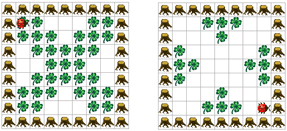

Programmieren Sie Kara so, dass er ein "Negativbild" von dem Kleeblattbild innerhalb des Baumrechtecks erstellt. Wo ein Kleeblatt liegt, soll er es aufnehmen, und wo keines liegt, soll er eines hinlegen. Kara startet immer oben links in der Ecke mit Blick nach rechts.